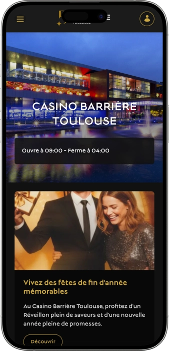

Offre de bienvenue exclusive de
Offre de bienvenue exclusive de
Casino Barrière Toulouse — jeux, spectacles, restaurants et esprit night out
Top casinos
Détails du bonus
Casino
Bonus
Note
Tours gratuits
Plus d'infos
Obtenir
Avantages
-
Plus de 300 machines à sous variées
-
Roulette et blackjack en ambiance soirée
-
Poker en cash game et tournois
-
Jeux électroniques pour rythme dynamique
-
Théâtre et spectacles sur place
-
Plusieurs bars pour se détendre
-
Accès pratique et services complets
- Le Casino Barrière Toulouse séduit par son concept « tout-en-un » : jeux, restauration et spectacles réunis au même endroit. L’expérience est pensée pour enchaîner apéritif, divertissement et session de jeu sans friction. L’accueil et l’organisation facilitent une sortie réussie, même pour une première visite.
Casino Barrière Toulouse App


À propos Casino Barrière Toulouse
Le casino se distingue par l’alliance jeux + théâtre, pour une sortie complète au même endroit. L’offre bars et restaurants prolonge l’expérience et permet d’alterner détente, spectacle et jeu.
- Jackpot : jusqu’à 129 795 €.
- Machines : gros gains progressifs.
- Tournois : prizes et dotations.
Le Casino Barrière Toulouse est un complexe de divertissement moderne qui réunit jeux, restauration et spectacles. L’espace est conçu pour passer facilement des salles de jeux aux bars ou au théâtre. L’ambiance est à la fois vivante et confortable, avec une vraie attention portée au service.
On y retrouve des machines et des tables, ce qui permet d’adapter la soirée à ses envies. La scène sur place ajoute une dimension événementielle et transforme la visite en sortie complète. Les zones de détente invitent à faire une pause avant de reprendre le jeu. Le personnel accompagne les visiteurs et facilite la découverte des espaces. Beaucoup choisissent la formule « dîner, spectacle, jeux » pour varier les plaisirs. La programmation évolue au fil du temps et donne envie de revenir. C’est un lieu apprécié autant pour l’atmosphère que pour l’expérience globale.
Casino Barrière Toulouse : une soirée élégante entre jeux et spectacles
Le Casino Barrière Toulouse se présente comme un lieu contemporain au style affirmé, pensé pour une sortie du soir réussie. Lumières, détails soignés et circulation fluide créent une ambiance à la fois chic et accessible. On peut venir pour jouer, mais aussi simplement pour profiter d’un cadre vivant et convivial. L’ensemble fonctionne comme un parcours : bar, spectacle, jeu, puis détente, sans impression de rupture.
Côté horaires, l’établissement se prête autant aux visites en journée qu’aux soirées prolongées, grâce à une ouverture matinale et une fermeture tardive. Ce rythme laisse le choix : arriver tôt, prendre son temps, ou viser directement l’énergie de la nuit. L’organisation intérieure favorise les pauses et les transitions, ce qui rend l’expérience confortable. On peut alterner moments intenses et parenthèses calmes, sans se presser.
Les bars jouent un rôle central dans l’atmosphère, car ils donnent à la soirée un tempo plus souple. Un apéritif avant le théâtre, un cocktail après un spectacle ou une pause entre deux sessions de jeu deviennent des moments naturels. Ces espaces sont aussi des points de rencontre, idéaux pour partager l’expérience en groupe. La dimension musicale et l’ambiance lumineuse renforcent l’esprit « night out » recherché.
L’hébergement n’est généralement pas l’élément principal sur place : le concept mise surtout sur un divertissement complet au même endroit, avec jeux, scène et restauration. Cela n’empêche pas de transformer la sortie en escapade, grâce aux solutions d’hôtels disponibles à proximité. Beaucoup préfèrent ainsi prolonger la nuit sans contrainte. Cette flexibilité attire autant les visiteurs occasionnels que ceux qui viennent pour un événement précis.
Les événements constituent une vraie signature du lieu, notamment grâce au théâtre intégré et à une programmation qui dynamise le calendrier. Concerts, humour, spectacles musicaux et soirées spéciales offrent une expérience plus large que le simple jeu. On planifie souvent la visite autour d’une date à l’affiche, puis on complète par un dîner et une session de jeu. Le casino devient alors un pôle de sortie, pas seulement une salle de jeux.
Enfin, les programmes d’avantages et de fidélité s’inscrivent dans cette logique d’expérience globale. Les membres bénéficient souvent d’offres personnalisées, d’invitations et de privilèges qui améliorent le confort. Des promotions ponctuelles liées aux jeux et aux saisons viennent compléter l’ensemble. Le Casino Barrière Toulouse s’impose ainsi comme un lieu où l’on vient chercher une soirée complète, variée et mémorable.
Service et paiements au Casino Barrière Toulouse : équipe, moyens de paiement et retrait des gains
Le personnel du Casino Barrière Toulouse fonctionne généralement selon les standards d’un grand complexe : accueil, orientation, assistance et gestion des situations particulières. Les équipes savent adapter leur accompagnement, qu’il s’agisse d’une première visite ou d’un joueur habitué. Aux tables, les croupiers assurent le rythme, l’ambiance et la bonne tenue du jeu. Aux points d’information, au contrôle d’accès et dans les espaces de restauration, l’objectif est de rendre le parcours simple et fluide.
Pour les langues, le français reste la référence, tandis qu’un soutien en anglais est souvent possible, surtout lors des périodes d’affluence et des événements. Dans la pratique, la disponibilité dépend de la journée et de l’équipe présente. Pour les questions plus techniques, un responsable peut intervenir afin de sécuriser la réponse. Cette organisation limite les malentendus et accélère les démarches.
La devise utilisée est l’euro, et le paiement sur place se fait le plus souvent en espèces et par carte bancaire. Les espaces bars et restaurants disposent généralement de terminaux modernes, y compris le sans contact. Pour une soirée orientée jeu, il est conseillé de prévoir un mode de paiement confortable, afin d’éviter les interruptions. Il peut aussi exister des règles internes sur certaines transactions, liées à la sécurité et au jeu responsable.
Des distributeurs automatiques sont fréquemment accessibles dans ce type d’établissement ou à proximité immédiate, pour retirer des espèces rapidement. Le change n’est pas toujours proposé comme service dédié, donc les visiteurs internationaux préfèrent souvent effectuer l’échange en amont. Garder un peu de liquide pour les petites dépenses peut être utile, tout en privilégiant la carte pour le reste. L’équilibre carte/espèces offre la meilleure flexibilité.
Le retrait des gains en casino terrestre est généralement clair : petites sommes réglées au comptoir, montants plus élevés avec contrôles supplémentaires. Une pièce d’identité est habituellement nécessaire, et des formalités peuvent s’ajouter pour des gains importants. Ces étapes répondent à des obligations de sécurité et de conformité. Pour gagner du temps, mieux vaut demander au comptoir quels documents sont recommandés le jour de votre visite.
Concernant la fiscalité, les gains peuvent relever de règles qui dépendent du profil du joueur et des circonstances. Si vous jouez très régulièrement ou de manière professionnelle, une vérification auprès d’un conseiller fiscal est pertinente. Le casino applique des procédures d’identification et de traçabilité, mais l’analyse fiscale finale appartient au joueur. Cette séparation rend le processus plus sécurisé et plus prévisible pour tous.
Règles de visite du Casino Barrière Toulouse : tenue, accès et transports
La visite commence par un contrôle d’accès, il est donc essentiel d’avoir une pièce d’identité valide. L’entrée est réservée aux personnes majeures, et l’établissement peut refuser l’accès en cas de non-respect du règlement ou pour des raisons de sécurité. La tenue attendue est généralement une tenue de ville soignée, surtout en soirée et lors des événements. En état d’ivresse manifeste, l’accès peut être refusé afin de préserver le confort des visiteurs. Dans les salles de jeu, le comportement doit rester respectueux : ne pas perturber les autres, suivre les consignes des croupiers et respecter les procédures. Les photos et vidéos sont souvent limitées dans les zones de jeu pour des raisons de confidentialité. Il est recommandé de garder un œil sur ses effets personnels et de suivre les indications du personnel. La circulation est organisée pour rendre le parcours fluide, mais mieux vaut prévoir un peu de marge aux heures d’affluence. Le stationnement est généralement possible à proximité, avec une disponibilité variable selon l’heure. Les transports en commun offrent une alternative pratique, notamment en soirée. En cas de spectacle, arriver en avance permet de profiter pleinement de la soirée.
Dress code
- • Tenue de ville propre et soignée recommandée.
- • Les tenues trop décontractées (type plage/sport) peuvent être refusées.
- • En soirée : style smart casual apprécié.
Conditions d’accès
- • Accès réservé aux majeurs.
- • Pièce d’identité obligatoire.
- • Contrôles possibles par la sécurité.
Interdits et restrictions
- • Restrictions sur photo/vidéo dans les salles de jeu.
- • Interdiction de comportements agressifs ou perturbateurs.
- • Refus possible en cas d’ivresse manifeste.
Parking et accès
- • Stationnement sur place ou à proximité (anticiper aux heures pleines).
- • Transports en commun pratiques pour une sortie nocturne.
- • Une navette gratuite peut exister sur certains créneaux, facilitant l’accès.
Le Carré VIP & Barrière Play à Toulouse : fidélité, statuts, avantages et bonus
Le programme de fidélité du Casino Barrière Toulouse vise à récompenser la régularité et à améliorer le confort de visite. L’idée est simple : plus vous revenez, plus l’expérience devient fluide et avantageuse, sur les jeux comme sur les espaces bars et restaurants. La fidélité ne se limite pas à des points : elle apporte aussi un niveau de service, des invitations et des offres personnalisées. Pour un nouveau visiteur, c’est un moyen clair de valoriser ses sorties et de recevoir des avantages concrets. Pour un habitué, les statuts deviennent la clé, car ils ouvrent progressivement l’accès à des privilèges plus exclusifs. Le suivi de progression permet de comprendre ce que chaque niveau apporte et d’organiser ses visites en conséquence. Des opérations promotionnelles peuvent accélérer l’accumulation et donner un « coup de boost » sur une période limitée. Le programme s’intègre parfaitement à une soirée complète : jouer, dîner, assister à un spectacle, puis cumuler des avantages. Les membres accèdent souvent à des offres invisibles pour les non-inscrits. Lorsqu’on fréquente les événements, la fidélité prend encore plus de valeur via la priorité et les attentions. L’approche reste compatible avec une pratique responsable, grâce à des messages et outils clairs. Au final, c’est une mécanique qui récompense la régularité et améliore la qualité de chaque retour.
Conditions d’inscription
- • Inscription sur place : 5 à 10 minutes.
- • Pièce d’identité + majorité requises.
- • Carte/profil généralement activé le jour même.
Niveaux et obtention
- • Start : dès l’inscription ; cumul de base.
- • Silver : régularité + activité ; cumul accéléré (+10 à +15%).
- • Gold : visiteurs actifs ; plus d’offres ciblées (+25 à +35%).
- • Platinum/VIP : sur invitation ou forte activité ; privilèges étendus (+50%).
Bonus et privilèges
- • Points bonus sur les jeux : journées ×2 points.
- • Avantages bars : bons 10 à 20 € selon paliers.
- • Avantages événements : priorité + parfois -10 à -15% sur certaines dates.
- • Anniversaire : bon 15 à 30 € ou attention selon statut.
- • Service VIP : accès facilité, zones dédiées selon niveau.
Fournisseurs de logiciels
Divertissement et jeux au Casino Barrière Toulouse
Bonus, promos et offres spéciales au Casino Barrière Toulouse : jeux, spectacles et saisons
En dehors de la fidélité, le Casino Barrière Toulouse anime régulièrement la visite avec des promotions courtes, des événements de jeu et des temps forts saisonniers. Le principe est généralement simple : venir sur une période donnée, suivre une mécanique claire et obtenir un avantage supplémentaire. Pour les joueurs, cela peut prendre la forme de tournois, de semaines thématiques machines à sous, de tirages au sort ou de défis. Pour les amateurs de sorties, certaines offres se combinent au théâtre avec des formats dîner-spectacle, menus spéciaux et soirées festives. L’intérêt de ces animations est leur renouvellement, qui donne envie de revenir. Beaucoup d’opérations suivent le calendrier : fêtes de fin d’année, soirées du Nouvel An, week-ends thématiques ou grands rendez-vous. Les promos jeux ajoutent du rythme et encouragent à découvrir de nouveaux titres ou variantes. Les promos divertissement créent une soirée « clé en main » : bar, scène, puis jeu. Ainsi, une même adresse peut offrir des expériences très différentes d’une semaine à l’autre. On voit aussi des mécaniques type « happy hours » au bar ou des animations ponctuelles qui rendent les pauses plus agréables. Le meilleur réflexe est de considérer ces promos comme un plus, jamais comme une promesse de gain. De cette manière, l’expérience reste fun, variée et maîtrisée.
- • Jackpots progressifs sur machines : exemple « prochain jackpot » ≈ 129 795 € ; montant évolutif lié au cumul.
- • Journées tournois (poker/machines) : dotations, par exemple 1 000 à 10 000 € selon format ; plusieurs places récompensées.
- • Défis thématiques : bonus/avantages 50 à 500 € (bons, cadeaux) pour des objectifs de jeu sur une période.
- • Lotos & tirages cadeaux : lots représentant 500 à 3 500 € selon animation ; souvent saisonnier.
- • Soirées festives & dates spéciales : packs « dîner + spectacle » à partir de ≈ 70–90 € selon l’affiche.
- • Promo “double chance” : mécanique ×2 sur certaines périodes (plus d’entrées à un tirage, etc.).
- • Cartes cadeaux & expériences : valeurs 20 à 100 €, idéales pour offrir une sortie.
Jeux populaires au Casino Barrière Toulouse : machines, roulette, blackjack et poker
L’offre jeux du Casino Barrière Toulouse est pensée pour différents profils, des amateurs de machines rapides aux passionnés de tables. Les machines à sous restent souvent le choix le plus accessible : règles simples, rythme immédiat et grande variété de thèmes. La roulette et le blackjack incarnent l’esprit casino classique, avec une ambiance de table et des décisions qui structurent la session. Le poker attire celles et ceux qui recherchent stratégie, lecture des adversaires et dimension sociale. Les jeux électroniques sont pratiques quand on veut s’installer rapidement et jouer sans attente. Les tables « live » plaisent pour l’énergie, l’interaction et le cérémonial des jetons. Pour une première visite, commencer par machines ou terminaux électroniques aide à prendre ses repères. Les joueurs expérimentés alternent volontiers : roulette pour le frisson, blackjack pour la stratégie, poker pour l’intensité. Le complexe facilite aussi les pauses : bar, restauration, puis retour en salle de jeu. Lorsqu’un spectacle est au programme, le jeu devient un prolongement naturel de la soirée. Cette diversité rend l’expérience plus riche et plus flexible. Le meilleur conseil reste de choisir le format selon son humeur et de fixer des limites pour garder le jeu dans le plaisir.
- • Machines à sous — grande variété, rythme rapide, possibilité de jackpots progressifs.
- • Roulette anglaise — mises variées, suspense, ambiance de table.
- • Blackjack — décisions et stratégie, gestion du risque.
- • Texas Hold’em (poker) — stratégie, psychologie, affrontement entre joueurs.
- • Ultimate Poker — poker dynamique, décisions rapides.
- • La Boule — classique accessible, cadence reconnaissable.
- • Jeux électroniques — accès rapide à roulette/blackjack en mode terminal.
Mises au Casino Barrière Toulouse : minimums et maximums selon les jeux
Les limites de mise au Casino Barrière Toulouse sont généralement pensées pour convenir à différents budgets : petites mises sur machines et jeux électroniques, puis limites plus élevées sur certaines tables. Cela permet d’ajuster le rythme et le niveau de risque selon l’envie du moment. Gardez en tête que les limites peuvent varier selon l’heure, la table et l’affluence. Le tableau ci-dessous donne des repères indicatifs pour mieux préparer sa session.
| Jeu | Mise minimale | Mise maximale |
|---|---|---|
| Machines à sous | 0,01 € | 10–20 € / spin |
| Roulette électronique | 0,50–1 € | 50–100 € |
| Roulette (table live) | 2–5 € | 200–500 € |
| Blackjack (table live) | 5–10 € | 200–500 € |
| Ultimate Poker | 2–5 € | 100–300 € |
| Texas Hold’em (cash game) | 1/2 € | 5/10 € et + |
| La Boule | 2 € | 100–200 € |
Spectacles, nightlife et divertissements au Casino Barrière Toulouse : théâtre, musique et rendez-vous réguliers
Le Casino Barrière Toulouse se distingue par une dimension divertissement très forte : le théâtre intégré transforme l’adresse en véritable lieu de sortie. On peut construire la visite autour d’un spectacle plutôt que du jeu, qu’il s’agisse d’un concert, d’un humour ou d’un show musical. Cela crée une soirée complète : apéritif, scène, puis prolongation au bar et passage en salle de jeux. Cette logique « tout-en-un » plaît à ceux qui veulent une nuit variée et bien rythmée.
Les formats du soir donnent souvent une ambiance plus festive, où la musique et les bars deviennent un moment à part entière. Après un spectacle, beaucoup restent pour un cocktail afin de prolonger l’expérience au lieu de partir immédiatement. En groupe, c’est idéal : chacun peut choisir son tempo, entre jeu, bar et discussion. L’ensemble ressemble davantage à un complexe de loisirs qu’à une simple salle de jeux.
Les événements spéciaux suivent fréquemment le calendrier saisonnier : fêtes, soirées thématiques, dates particulières. Ces soirées peuvent s’accompagner de menus dédiés, d’animations au bar et d’une énergie plus marquée dans les espaces. Même une visite classique prend alors un parfum d’exception. C’est un bon choix pour un week-end, une célébration ou une sortie improvisée.
Pour les amateurs de nightlife, l’avantage est logistique : pas besoin de multiplier les lieux pour changer d’ambiance. Le théâtre, les bars et les jeux sont réunis, ce qui rend la soirée cohérente et simple à gérer, surtout tard dans la nuit. En revenant régulièrement, on finit par créer ses rituels : spectacle puis cocktail, ou poker puis dîner tardif. Cette flexibilité fait la force du lieu.
Au final, le Casino Barrière Toulouse agit comme une plateforme multi-divertissements : culture, ambiance festive et émotions de jeu se combinent en une seule expérience. C’est particulièrement adapté aux soirées en couple, aux sorties entre amis et aux événements d’entreprise. Avec les animations saisonnières, l’adresse se renouvelle et garde son attrait. Voilà pourquoi on le choisit souvent comme « point central » d’une soirée réussie.
Liste des divertissements
- • Théâtre / programmation — concerts, humour, shows musicaux, dates spéciales.
- • Dîner-spectacle — formule “repas + scène” pour une soirée clé en main.
- • Ambiance bar du soir — cocktails, sets musicaux, esprit night out.
- • Tournois de jeux — rendez-vous poker et/ou animations machines.
- • Saisonnalité — fêtes, soirées thématiques, événements ponctuels.
Bars, restaurants et détente au Casino Barrière Toulouse : gastronomie, pauses et soirée clé en main
Au Casino Barrière Toulouse, la détente commence souvent par la table ou le bar : on construit la soirée avec un apéritif, un dîner, puis un moment festif avant ou après le jeu. La restauration n’est pas un simple “plus” : elle fait partie de l’expérience globale, pensée pour le confort et le plaisir. Cette approche plaît aussi à ceux qui ne viennent pas forcément pour jouer longtemps, mais souhaitent une sortie complète. On peut ainsi profiter du lieu comme d’un véritable complexe de loisirs.
L’offre culinaire répond généralement à plusieurs besoins : un dîner plus élégant, une formule café plus simple, et des options bar pour grignoter entre deux moments. Cela permet d’adapter le rythme à la programmation du théâtre et à l’envie du soir. Avant un spectacle, venir plus tôt pour dîner rend la soirée plus fluide et plus agréable. Après une session de jeu, un repas tardif ou un cocktail devient une conclusion naturelle.
Les bars sont souvent le cœur social : on s’y retrouve, on échange sur la soirée, on partage les impressions du spectacle et on fait une pause. Selon l’heure et le jour, l’ambiance peut être calme ou plus animée. Après le théâtre, le bar prolonge l’énergie de l’événement et transforme la sortie en vraie nuit de divertissement. Pour ceux qui aiment le rythme nocturne, c’est un excellent trait d’union entre scène et jeu.
Côté hôtels, le concept reste surtout orienté “sortie complète” sur place, tandis que l’hébergement se choisit autour si l’on veut prolonger. C’est pratique pour les visiteurs qui viennent pour un spectacle, une longue session ou un week-end. L’expérience devient alors multi-étapes : dîner, show, bar, jeu, puis repos sans contrainte de transport tardif. Ce confort renforce l’attractivité du lieu.
Globalement, le Casino Barrière Toulouse fonctionne comme un “constructeur de soirée”. On peut venir pour la gastronomie et l’ambiance, puis ajouter le jeu comme final, ou faire l’inverse. Cette liberté d’assemblage explique pourquoi le lieu séduit autant les couples que les groupes d’amis. L’équilibre entre détente et divertissement y est particulièrement réussi.
Tous les lieux de détente
- • Fouquet’s — restaurant élégant, idéal pour un dîner et les grandes occasions.
- • Café Barrière — solution simple et pratique pour une pause ou un repas.
- • Samouraï Lounge Bar — cocktails et ambiance “soirée”, parfait après un spectacle.
- • Café des Sports — esprit convivial, ambiance sportive et échanges.
- • Central Bar — pause rapide à proximité des espaces de jeu.
FAQ
Généralement non : contrôle d’accès, pièce d’identité, puis formalités éventuelles selon la soirée. Certaines zones VIP ou événements peuvent avoir des règles spécifiques.
Souvent oui : restauration et théâtre peuvent se vivre indépendamment. L’accès dépend toutefois des règles du soir et du contrôle.
Contactez l’accueil ou la sécurité : un service objets trouvés est généralement en place. Plus vous signalez tôt, plus la récupération est simple.
Des informations et outils de prévention existent généralement, ainsi que des possibilités d’auto-contrôle. En cas de doute, faire une pause et demander de l’aide est le bon réflexe.